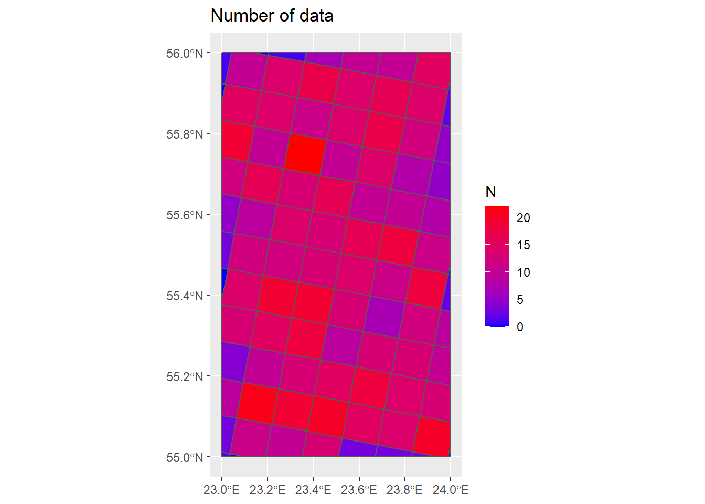
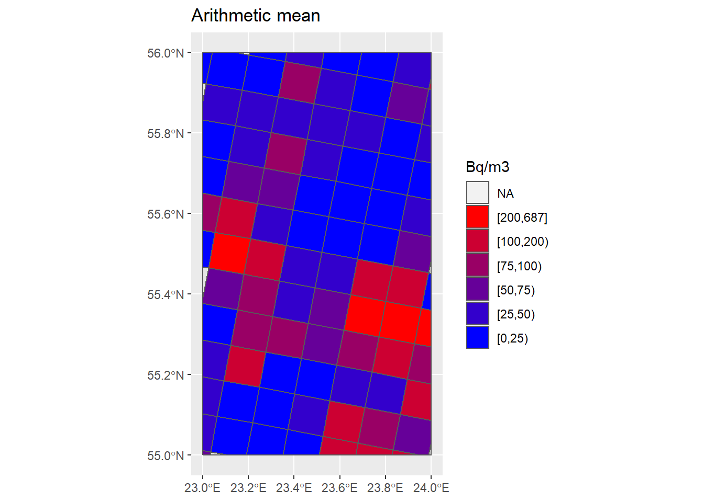

Chapter 5 Summary statistics
## InRn by grids of 10 x 10 km (summry: N, AM, SD, GM, GSD) ----
InRn_DL <- st_intersection(InRn_DL, Grids_10km)
str(InRn_DL)# Classes 'sf' and 'data.frame': 1000 obs. of 12 variables:
# $ Rn : num 5.113 0.785 1.763 6.323 36.349 ...
# $ LogRn : num 1.632 -0.242 0.567 1.844 3.593 ...
# $ Rn_Cen : logi TRUE TRUE TRUE TRUE FALSE FALSE ...
# $ brks : Factor w/ 6 levels "[0,50)","[50,100)",..: 1 1 1 1 1 4 1 3 2 1 ...
# $ Case : Factor w/ 2 levels "0","1": 1 1 1 1 1 2 1 1 1 1 ...
# $ CELLCODE : chr "10kmE512N372" "10kmE513N367" "10kmE513N367" "10kmE513N367" ...
# $ EOFORIGIN: num 5120000 5130000 5130000 5130000 5130000 5130000 5130000 5130000 5130000 5130000 ...
# $ NOFORIGIN: num 3720000 3670000 3670000 3670000 3680000 3680000 3680000 3680000 3680000 3690000 ...
# $ Id : Factor w/ 1022 levels "1","2","3","4",..: 341 362 362 362 363 363 363 363 363 364 ...
# $ GID_0 : chr "LTU" "LTU" "LTU" "LTU" ...
# $ NAME_0 : chr "Lithuania" "Lithuania" "Lithuania" "Lithuania" ...
# $ geometry :sfc_POINT of length 1000; first list element: 'XY' num 23 56
# - attr(*, "sf_column")= chr "geometry"
# - attr(*, "agr")= Factor w/ 3 levels "constant","aggregate",..: NA NA NA NA NA NA NA NA NA NA ...
# ..- attr(*, "names")= chr [1:11] "Rn" "LogRn" "Rn_Cen" "brks" ... InRn_DL$Case <- as.numeric(as.character(InRn_DL$Case))
InRn_Summary_Grids10km <- InRn_DL %>%
group_by(Id) %>%
summarize(N = n(),
Case = sum(Case),
AM = mean(Rn),
SD = sd(Rn),
GM = exp(mean((LogRn))),
GSD = exp(sd(LogRn)),
MIN = min(Rn),
MAX = max(Rn))
## Add summary to grids of 10x10 km ----
Grids_10km_Sum <- left_join(Grids_10km %>% as.data.frame(), InRn_Summary_Grids10km %>% as.data.frame(), by = "Id")
Grids_10km_Sum <- Grids_10km_Sum %>%
st_sf(sf_column_name = "geometry.x") %>%
mutate(N = replace_na(N, 0))
summary(Grids_10km_Sum)# CELLCODE EOFORIGIN NOFORIGIN Id GID_0 NAME_0
# Length:93 Min. :5120000 Min. :3610000 340 : 1 Length:93 Length:93
# Class :character 1st Qu.:5150000 1st Qu.:3640000 341 : 1 Class :character Class :character
# Mode :character Median :5160000 Median :3670000 361 : 1 Mode :character Mode :character
# Mean :5163871 Mean :3674516 362 : 1
# 3rd Qu.:5180000 3rd Qu.:3710000 363 : 1
# Max. :5210000 Max. :3740000 364 : 1
# (Other):87
# N Case AM SD GM GSD MIN
# Min. : 0.0 Min. :0.00 Min. : 3 Min. : 1 Min. : 2 Min. :1.12 Min. : 0.3
# 1st Qu.: 7.0 1st Qu.:0.00 1st Qu.: 19 1st Qu.: 19 1st Qu.: 11 1st Qu.:2.28 1st Qu.: 1.7
# Median :12.0 Median :0.00 Median : 39 Median : 39 Median : 24 Median :2.75 Median : 4.2
# Mean :10.8 Mean :0.77 Mean : 69 Mean : 68 Mean : 45 Mean :2.95 Mean : 11.4
# 3rd Qu.:14.0 3rd Qu.:1.00 3rd Qu.: 86 3rd Qu.: 77 3rd Qu.: 54 3rd Qu.:3.44 3rd Qu.: 11.3
# Max. :22.0 Max. :9.00 Max. :687 Max. :549 Max. :472 Max. :6.20 Max. :143.2
# NA's :7 NA's :7 NA's :11 NA's :7 NA's :11 NA's :7
# MAX geometry.x geometry.y
# Min. : 5 POLYGON :93 GEOMETRYCOLLECTION: 7
# 1st Qu.: 59 epsg:4326 : 0 MULTIPOINT :82
# Median : 132 +proj=long...: 0 POINT : 4
# Mean : 213 epsg:4326 : 0
# 3rd Qu.: 230 +proj=long... : 0
# Max. :1615
# NA's :7 ## Plot number of data in each grid cell ----
cols <- colorRampPalette(c("blue", "red"))(6)
P_Grids10km_N <- ggplot() +
geom_sf(data = Country) +
geom_sf(data = Grids_10km_Sum, aes(fill = N)) +
scale_fill_gradient(low = "blue", high = "red") +
ggtitle("Number of data")
P_Grids10km_N
## Plot arithmetic mean ----
max(Grids_10km_Sum$AM, na.rm = T)# [1] 687 breaks <- c(0, 25, 50, 75, 100, 200, max(Grids_10km_Sum$AM, na.rm = T))
Grids_10km_Sum <- Grids_10km_Sum %>% mutate(AM_brks = cut(AM, breaks, include.lowest = T, right = F))
cols <- colorRampPalette(c("blue", "red"))(6)
P_Grids10km_AM <- ggplot() +
geom_sf(data = Country) +
geom_sf(data = Grids_10km_Sum, aes(fill = AM_brks)) +
scale_fill_manual(name = "Bq/m3", values = cols, guide = guide_legend(reverse = TRUE)) +
ggtitle("Arithmetic mean")
P_Grids10km_AM
## Probabilistic maps ----
# Probability of having an indoor radon concentration above the national reference level (e.g. RL = 200 Bq m-3)
# Based solely on the indoor radon measurements in each grid of 10x10 km,
# and assuming data independence and lognormality
str(Grids_10km_Sum)# Classes 'sf' and 'data.frame': 93 obs. of 17 variables:
# $ CELLCODE : chr "10kmE512N371" "10kmE512N372" "10kmE513N366" "10kmE513N367" ...
# $ EOFORIGIN : num 5120000 5120000 5130000 5130000 5130000 5130000 5130000 5130000 5130000 5130000 ...
# $ NOFORIGIN : num 3710000 3720000 3660000 3670000 3680000 3690000 3700000 3710000 3720000 3730000 ...
# $ Id : Factor w/ 1022 levels "1","2","3","4",..: 340 341 361 362 363 364 365 366 367 368 ...
# $ GID_0 : chr "LTU" "LTU" "LTU" "LTU" ...
# $ NAME_0 : chr "Lithuania" "Lithuania" "Lithuania" "Lithuania" ...
# $ N : num 0 1 0 3 5 12 19 15 10 0 ...
# $ Case : num NA 0 NA 0 1 0 0 0 0 NA ...
# $ AM : num NA 5.11 NA 2.96 97.47 ...
# $ SD : num NA NA NA 2.96 91.43 ...
# $ GM : num NA 5.11 NA 2.06 56.42 ...
# $ GSD : num NA NA NA 2.86 3.79 ...
# $ MIN : num NA 5.113 NA 0.785 8.032 ...
# $ MAX : num NA 5.11 NA 6.32 205.46 ...
# $ geometry.x:sfc_POLYGON of length 93; first list element: List of 1
# ..$ : num [1:4, 1:2] 23 23 23 23 55.9 ...
# ..- attr(*, "class")= chr [1:3] "XY" "POLYGON" "sfg"
# $ geometry.y:sfc_GEOMETRY of length 93; first list element: list()
# ..- attr(*, "class")= chr [1:3] "XY" "GEOMETRYCOLLECTION" "sfg"
# $ AM_brks : Factor w/ 6 levels "[0,25)","[25,50)",..: NA 1 NA 1 4 1 1 2 1 NA ...
# - attr(*, "sf_column")= chr "geometry.x"
# - attr(*, "agr")= Factor w/ 3 levels "constant","aggregate",..: NA NA NA NA NA NA NA NA NA NA ...
# ..- attr(*, "names")= chr [1:15] "CELLCODE" "EOFORIGIN" "NOFORIGIN" "Id" ... # 1st: estimated Prob[InRn > 200 Bq m-3]
RL <- 200
Grids_10km_Sum <- Grids_10km_Sum %>%
mutate(Prob = 100*(1-pnorm(log(RL), mean = log(GM), sd = log(GSD))))
# 2nd: Replace values in grids with less than n data (i.e. N < 5) by a modeled value
# Generate the points for the interpolation (centroid)
DCen <- st_centroid(Grids_10km_Sum)
# Inverse distance weighted (IDW) interpolation
Prob_IDW <- idw(Prob ~ 1, filter(DCen, N > 5),
newdata = filter(DCen, N <= 5),
nmax = 10,
idp = 2 )# [inverse distance weighted interpolation] # Replace values by the modeled values
Grids_10km_Sum <- Grids_10km_Sum %>% mutate(Prob = replace(Prob, N <= 5, Prob_IDW$var1.pred))
# Plot maps
breaks <- c(0, 1, 5, 10, 20, 30, max(Grids_10km_Sum$Prob))
Grids_10km_Sum <- Grids_10km_Sum %>% mutate(Prob_brks = cut(Prob, breaks, include.lowest = T, right = F))
cols <- colorRampPalette(c("blue", "red"))(6)
P_Grids10km_Prob <- ggplot() +
geom_sf(data = Country) +
geom_sf(data = Grids_10km_Sum, aes(fill = Prob_brks)) +
scale_fill_manual(name = "%", values = cols, guide = guide_legend(reverse = TRUE)) +
ggtitle("Prob[InRn > 200 Bq m-3]")
P_Grids10km_Prob